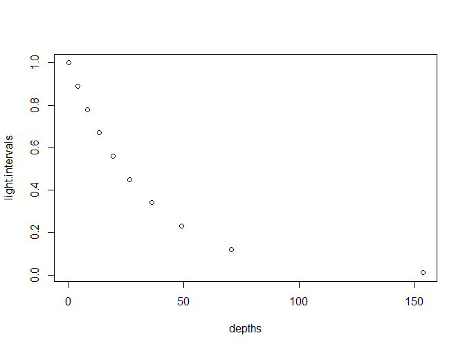

MCE is an R package for modelling the vertical distribution of coral communities across depth gradients. MCE currently contains a light driven mechanistic model of the transition from shallow to mesophotic reefs. The goal for the future is to allow the research community to include additional mechanisms. These models can provide useful null hypotheses, and help us to quantify the importance of missing ecosystem level processes.
Installation
You can install the released version of MCE from CRAN with:
And the development version from GitHub with:
Example
MCE is largely split into functions which control the environment with depth, and functions which control community relationships to the environment. The following code shows how to build a light gradient with depth:
library(MCE)
light.intervals <- seq(0.01, 1, length.out = 10) # Choose light levels to calculate depths for
depths <- depth(light.intervals, KdPAR = 0.03) # Calculate depths specifying light attenuation
plot(x = depths, y = light.intervals) # Quick plot
We can then specify how a coral community will respond to an environmental gradient:
light.intervals <- seq(0.01, 100, length.out = 10) # Choose light levels to calculate community values for
community <- shallow(light.intervals) # Calculate community values
plot(y = community, x = light.intervals) # Quick plot
Combining the environment and community functions allows you to project a depth distribution:
library(dplyr, warn.conflicts = F)
library(ggplot2)
data.frame(light.intervals = seq(0.01, 1, length.out = 10)) %>% # Choose light levels
mutate(depths = depth(light.intervals, KdPAR = 0.03), # Calculate depths
community = shallow(light.intervals * 100)) -> depth.distribution # Calculate community values
ggplot(depth.distribution) + # Plot
geom_area(aes(y = community, x = depths), fill = "skyblue", colour = "black") +
theme_minimal() +
labs(x = "Depth (m)", y = "Shallow community value",
caption = "Example depth distribution for a shallow coral reef community")